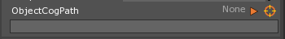
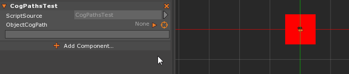
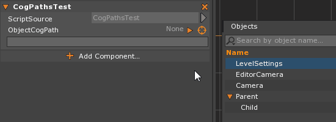
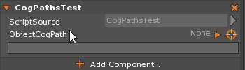
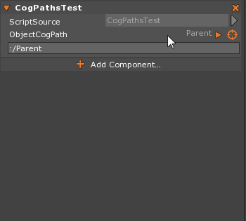

CogPaths
CogPaths provide a good way to get a reference to any Cog within your game. It allows you to point directly to the object as you’ve identified in the editor (or through a written file path) instead of wasting valuable computation time searching for it in code. It is usually best to instantiate any CogPath variables before run-time
The CogPath Property
- To use a
CogPathproperty in your component, you will need to make aCogPathvariable with thePropertyattribute, like so:
[Property]
var ObjectCogPath : CogPath;
- When you look at the Property window, you should now see the CogPath interface:

You can select the object to use as the CogPath from the Level Editor window, the Objects window, or by typing it in directly
To select from the Level Editor:
Hold Left-Click over the Orange reticle icon and Drag over to the object in the Level Editor window, like so:

To select from the Objects window:
Hold Left-Click over the Orange reticle icon and Drag over the object name in the Objects window, like so:

To select by typing the name in directly:
- You must use a syntax that is very similar to a file system hierarchy. The space the object is in acts as the “Drive Name” (this.Space:/).If the object is in the space that the component is in, you do not need to type in the space, like so:

You can access the Cog from the CogPath in code as follows:
[Property]
var ObjectCogPath : CogPath;
function Initialize(init: Initializer)
{
var objectCog = this.ObjectCogPath.Cog;
}
In-Editor Properties of CogPath
Once you have selected the object to use as the CogPath, a number of different options become available to you. In the Property window, you access these by clicking on the arrow icon next to the orange reticle, like so:

The properties that are available to you through the editor are enumerated with descriptions in the table below:
| Editor Property | Description |
|---|---|
| DirectCog | If the current cog is null, and you try to access it through CogPath.Cog, it will try to resolve the path when you access it. DirectCog never tries to resolve the path. It’s a pointer to the object itself. |
| ErrorOnResolveToNull | Is an exception thrown if you try to access the Cog when it’s invalid or not found? |
| ErrorOnPathCantCompute | Throw an exception/notification if the path to an object cannot be computed? |
| ErrorOnDirectLinkFail | Throw an exception/notification if a direct link to the object cannot be resolved? |
| UpdateCogOnPathChange | When we set the cog path, should we try and resolve the object? (this also detects parse errors) |
| UpdateCogOnInitialize | Whether the cog path attempts to resolve an object when the object is fully initialized |
| UpdatePathOnCogChange | When we set the cog, should we try and recompute a path to the object? |
| CogRelative (Path Preference) | We first try and look if there is a way to represent that path as a relative path. This is only valid if the objects are on the same hierarchy (such as ‘..’ for parent, ‘../OtherObject’ for a sibling, or ‘Child1/Child2’ for children) |
| SpaceRelative (Path Preference) | Assumes the objects are not on the same hierarchy, but exist within the same space. This means all paths begin with ‘:/’, which means look within the same space. |
| Absolute (Path Preference) | We always require a named space (such as Hud or Main) and then a full path to the object such as ‘Hud:/HealthText’. Note that Absolute can only be used in the editor with the orange reticle target picker if the space is given a name. |
The Properties and Functions of CogPath
The following tables will cover all of the member properties and functions of CogPath that are available in Zilch.
The Properties of CogPath in Zilch
The following table enumerates the properties of CogPath available to the user in Zilch:
| Property | Description |
|---|---|
RelativeTo : Cog |
The cogs that we compute paths relative to (i.e. parent or child objects) |
| Required | Deprecated Name changed to ErrorOnResolveToNull |
The Functions of CogPath in Zilch
The following table enumerates the functions of CogPath available to the user in Zilch:
| Function | Return | Description |
|---|---|---|
| Clone() | CogPath |
Creates a new copy of a cog path (since cog paths are reference counted and shared) |
| Refresh() | Boolean |
This will attempt to refresh an object using the DirectCog reference. If it finds it, it returns true; otherwise, it returns false. |
| RefreshIfNull() | This method will only attempt to refresh is the object is null. |